TRƯỜNG TRUNG HỌC PHỔ THÔNG PHẠM NGŨ LÃO
Kỉ niệm 50 năm thành lập trường
🌱 Trưởng thành trên một vùng quê giàu truyền thống yêu nước, cách mạng và hiếu học, trường THPT Phạm Ngũ Lão đã ươm trồng cho quê hương, đất nước những hạt giống tâm hồn – trí tuệ, nâng cánh bao ước mơ của tuổi trẻ và nối những nhịp cầu cho bao thế hệ tự tin bước tới tương lai.
🌱 Trưởng thành trên một vùng quê giàu truyền thống yêu nước, cách mạng và hiếu học, trường THPT Phạm Ngũ Lão đã ươm trồng cho quê hương, đất nước những hạt giống tâm hồn – trí tuệ, nâng cánh bao ước mơ của tuổi trẻ và nối những nhịp cầu cho bao thế hệ tự tin bước tới tương lai.
🕊 Trong 50 năm xây dựng và phát triển, trường THPT Phạm Ngũ Lão đã xây dựng được truyền thống tốt đẹp và đạt được những thành tích to lớn. Những thành tích ấy được bắt nguồn từ sự đoàn kết nhất trí, tích cực giảng dạy và công tác của tập thể các cán bộ giáo viên và nhà trường. Đặc biệt, đó là sự cố gắng nỗ lực, không ngừng, vượt khó, say mê học tập, đoàn kết thương yêu, giúp đỡ lẫn nhau của các thế hệ học sinh.
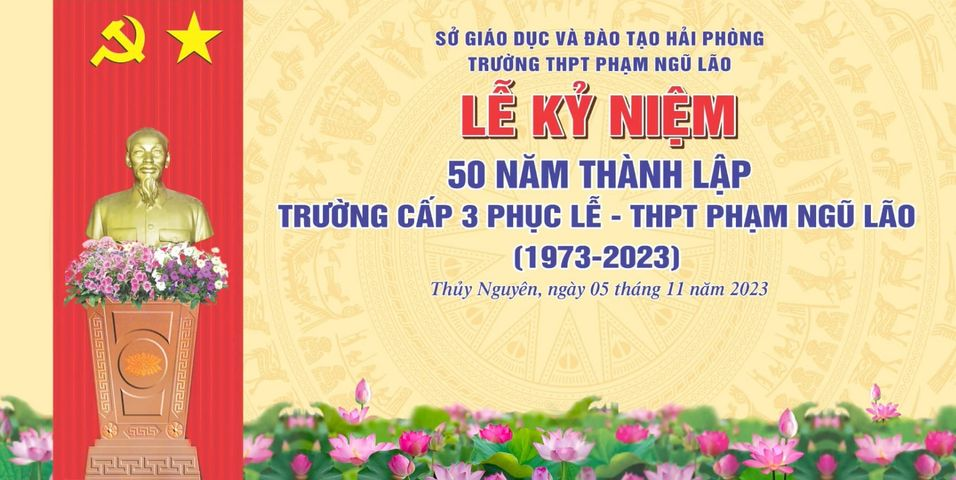
.jpg)
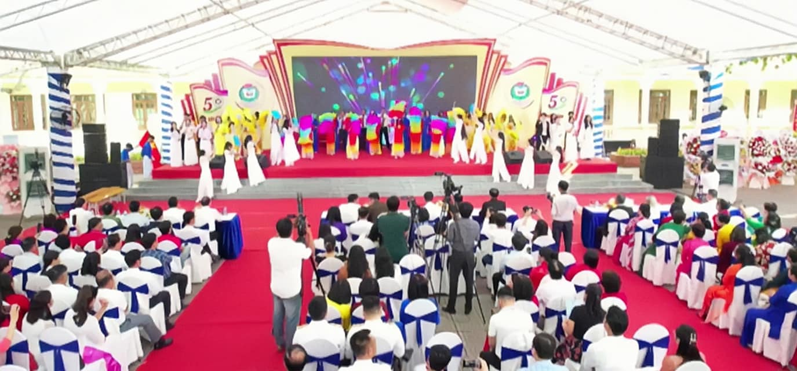
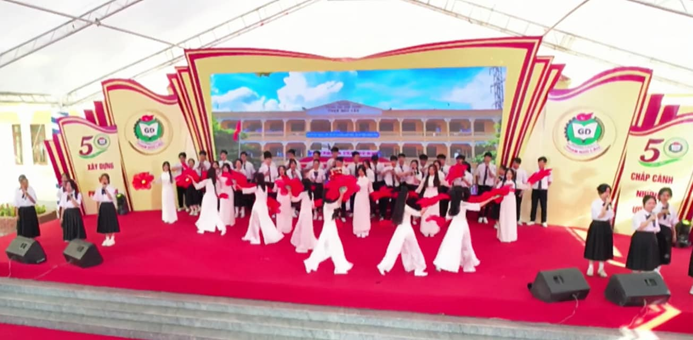
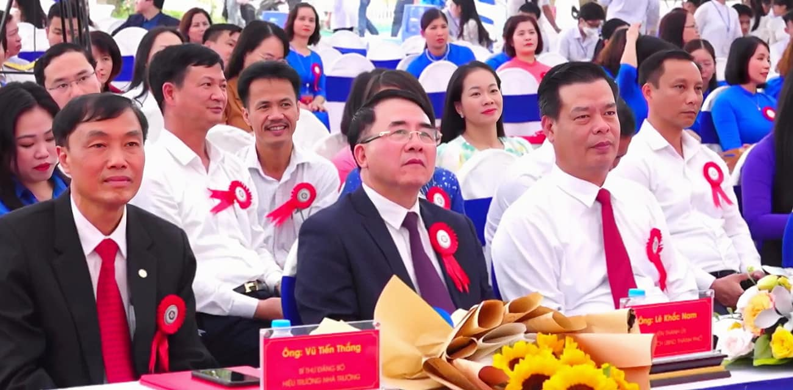
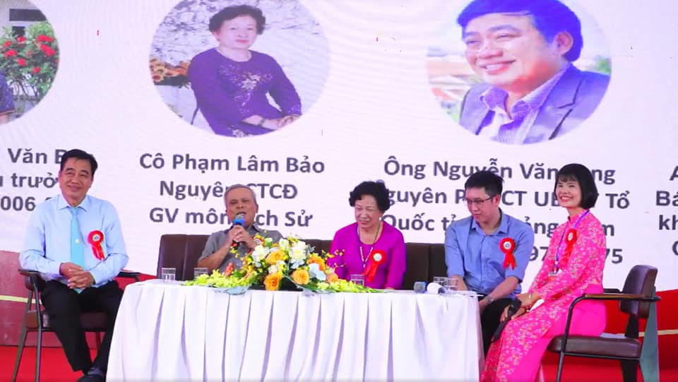
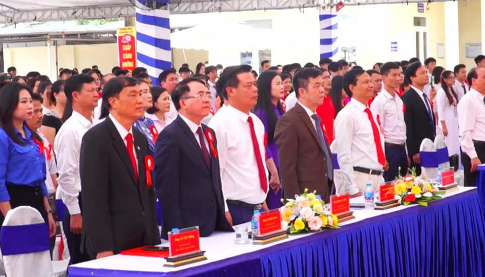
🏆 50 năm qua, 50 lần tiếng trống khai trường vang lên giục giã, để bao nhiêu thế hệ học sinh tung cánh bước vào đời, để hôm nay với bảng vàng thành tích đạt được qua 50 năm xây dựng và trưởng thành, chúng ta thật vinh dự, sung sướng và rất đỗi tự hào, bởi những thành tích to lớn đó mãi mãi sẽ là tài sản vô giá của đại gia đình THPT Phạm Ngũ Lão.
🍂 Trong 50 năm hoa lửa với biết bao thăng trầm và đổi thay, để rồi từ mái trường THPT Phạm Ngũ Lão biết bao thế hệ đã tung cánh bay khắp muôn nơi, trở thành niềm tự hào của nhà trường. Hòa chung trong bầu không khí tươi vui khi mái nhà thứ hai của mình đã được "50 tuổi" hôm nay – ngày 4/11 trường THPT Phạm Ngũ Lão long trọng tổ chức buổi lễ kỉ niệm 50 năm thành lập trường với các gian hàng văn hóa và các trò chơi tập thể vô cùng sôi động.
💐 Với gần hai mươi gian hàng được các bạn học sinh chuẩn bị vô cùng kì công tỉ mỉ thể hiện đặc trưng của mỗi lớp cùng các món ăn, đồ uống phong phú chắc hẳn đã tạo cho mọi người một không khí vui vẻ và một trải nghiệm thú vị để các bạn có thể giải stress sau những tháng ngày học tập căng thẳng.
❤️🔥 Một hoạt động cũng sôi nổi, thú vị không kém đó là các trò chơi tập thể với sự tranh tài của các lớp. Các bạn học sinh trường ta không chỉ chăm học mà cũng rất nhiệt tình, tích cực trong việc tham gia các hoạt động vui chơi giải trí để đem lại chiến thắng cho lớp của mình. Quả là một buổi hội ý nghĩa và sôi nổi phải không mọi người. Đây chắc hẳn sẽ là một kí ức tươi đẹp trong thanh xuân của những học sinh trường Phạm Ngũ Lão thân yêu.
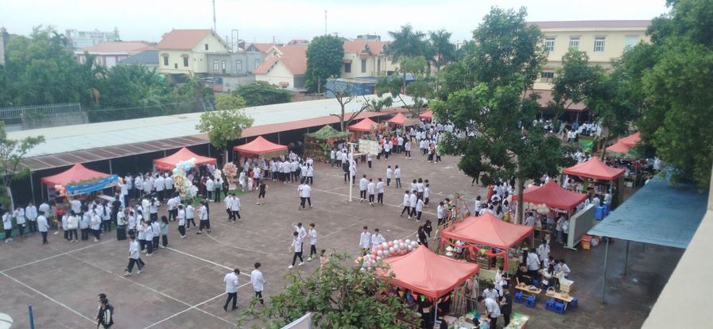
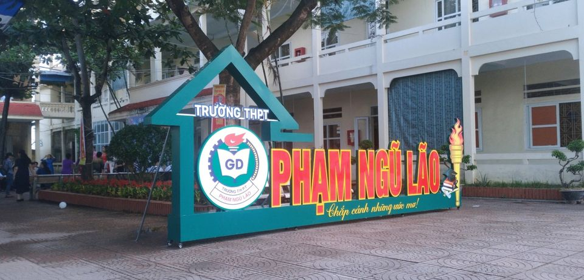
.jpg)
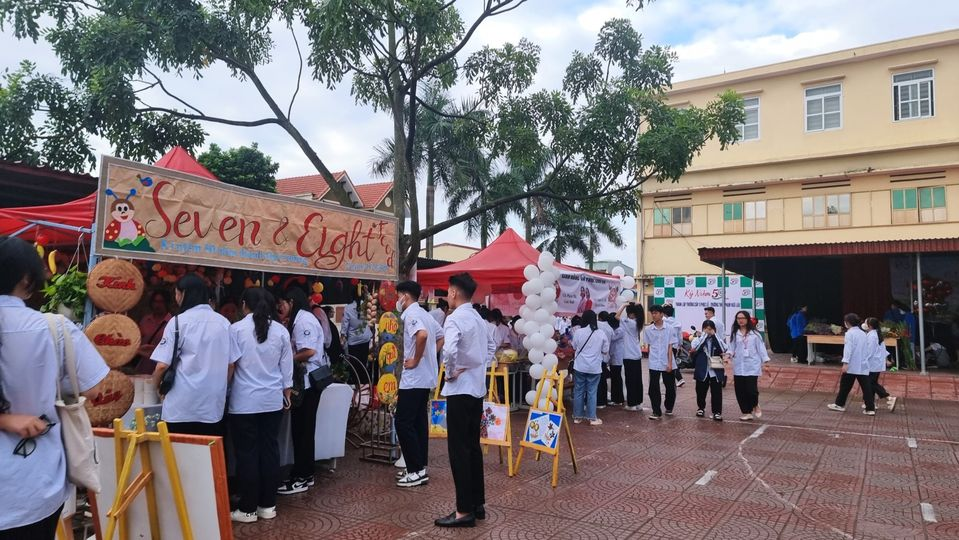
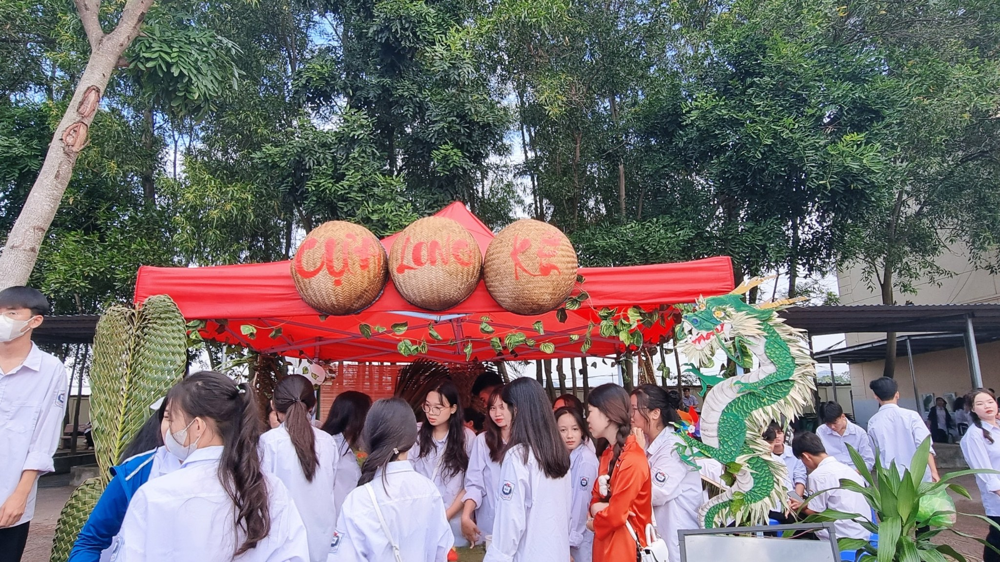
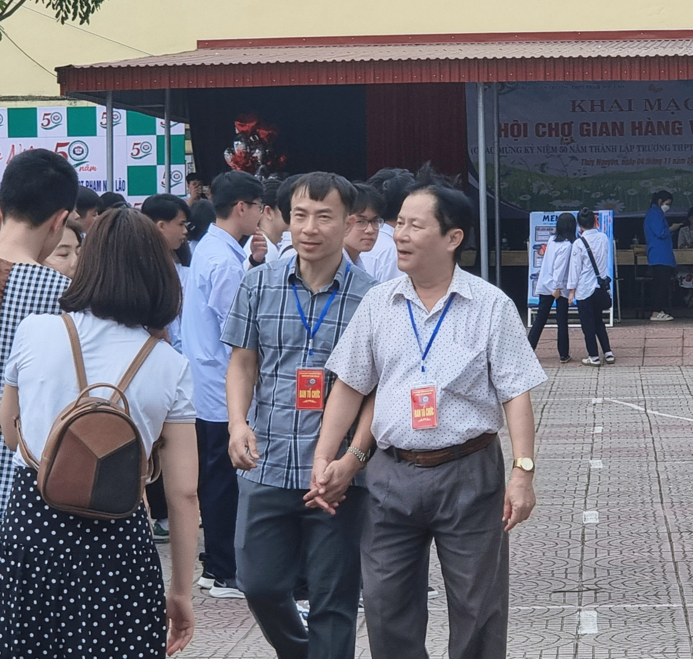
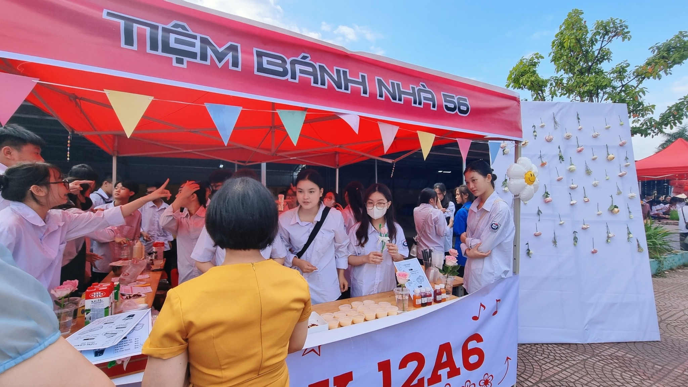
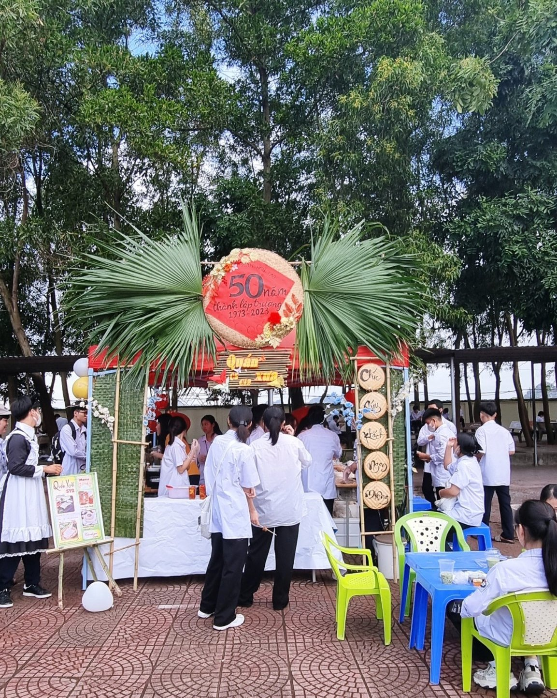